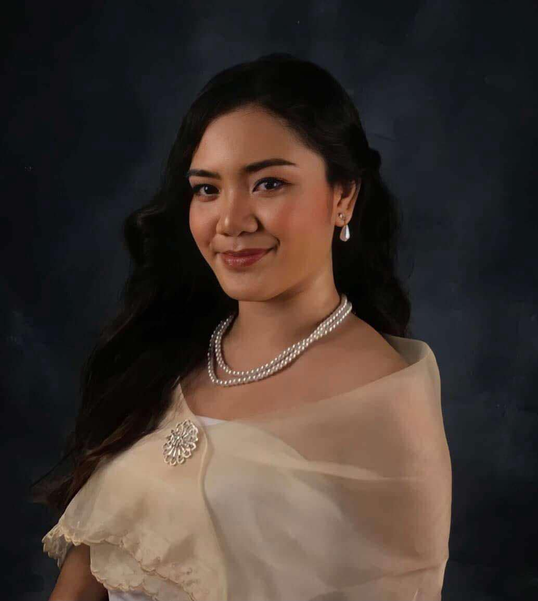
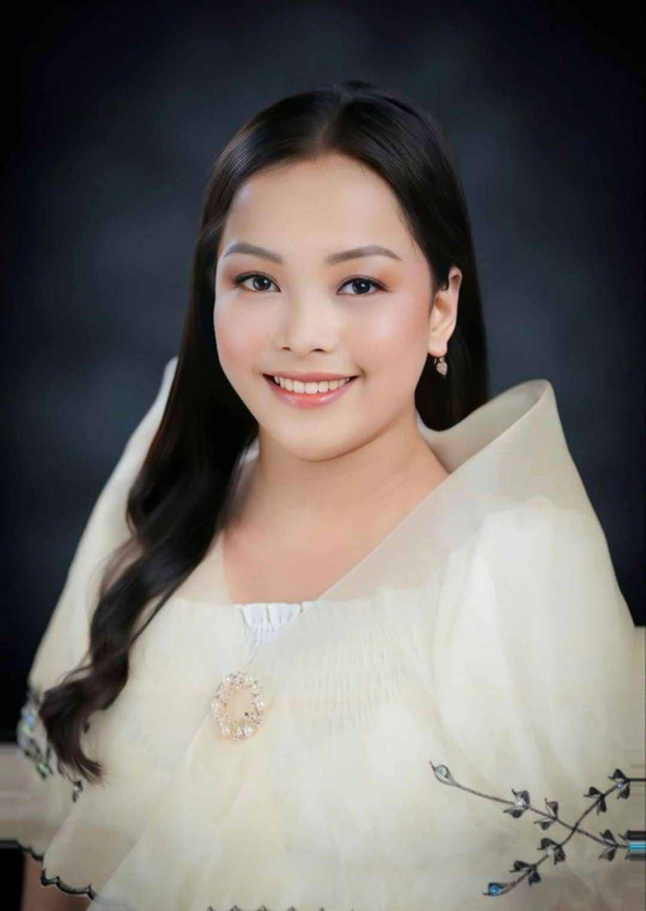

Sir Jundee F. Demain
Ma'am Rica Mae P. Bastante
Ma'am Cris Jean Joy M. Mascardo
Ma'am Cherry Ann B. Pabillo
Ma'am Czharina Mae L. Arpon
Ma'am Mary Rose D. Balintong
Ma'am Jessica A. Flores
Height: 5'4
Weight: 69 kg
Birth Date: Aug 5, 1997
Age: 27
Birth Place: Alang Alang, Leyte
Hobbies: Playing online games
Relationship Status: Single
Hometown: Alang Alang, Leyte
Current Address: Tacloban City
Education: Bachelor of Secondary Education Major in Mathematics
Favorite Thing: Sleeping
Least Favorite Thing: Jogging
Motto in Life: "Time is gold"
Height: 4'9
Weight: 45 kg
Birth Date: June 1, 2001
Age: 23
Birth Place: Mayorga, Leyte
Hobbies: Cooking
Relationship Status: Single
Hometown: Mayorga, Leyte
Current Address: Juan Lunas Street, Tacloban City
Education: Batchelor's degree, college graduate
Major Subject: Filipino
Favorite Thing: Cooking, watching movies
Least Favorite Thing: Reading
Motto in Life: "Mahalin ang sariling wika natin, pati ako idamay mo na rin!"
Height: 5'1
Birth Date: June 12, 2001
Age: 23
Birth Place: Tacloban City
Relationship Status: Single
Education: Bachelor's degree on Bachelor of Secondary Education Major in Science
Major Subject: Science
Favorite Thing: To Sing
Least Favorite Thing: To read articles
Motto in Life: "If no one was there for you be the light for yourself and for everyone"
Height: 5'3
Weight: 60 kg
Birth Date: July 28, 1997
Age: 27
Birth Place: Balangiga, Eastern Samar
Hobbies: Reading and watching movie series
Relationship Status: In a Relationship
Hometown: Balangiga, Eastern Samar
Current Address: Tacloban City
Education: Collge Graduate
Major Subject: TLE
Favorite Thing: Babies
Least Favorite Thing: Cats
Motto in Life: "Accept responsibility for your life. Know that it is you who will get you where you want to go, no one else"
Height: 166 cm / 5'6
Birth Date: August 27, 2000
Age: 24
Birth Place: Tacloban City
Hobbies: Eating 😭 watching movies, reading articles, Work out (gym), Hiking, Traveling
Relationship Status: In a relationship
Current Address: Brgy. 83, Paraiso, San Jose Tacloban City
Education: Burabod Elementary School, Biliran, Biliran
Biliran Science High School (Junior High)
Leyte National High School Tacloban City (Senior High)
Leyte Normal University (College)
Favorite Thing: Footwear (Sandals/shoes)
Favorite Artist Male/Female: Harry Styles
Favorite Song: Live While We're Young by One Direction
Favorite Color: White
Favorite Series: Favorite Series:
Favorite Movie: None, because there are so many, and I can't choose.
Least Favorite Thing: Make up
Motto in Life: "Progress, not Perfection"
Height: 1.50m
Weight: 57 kg
Birth Date: April 19, 1994
Age: 30
Birth Place: Tacloban City
Hobbies: Training Athletes, Running, Watching Movies, Listening to Music, Dancing and Karaoke
Relationship Status: Single
Hometown: Tacloban City
Current Address: Brgy. 74, Lower Nula Tula, Tacloban City
Education: College Degree Holder
Major Subject: Content Course
Favorite Thing: Training Athletes
Least Favorite Thing: N/A
Motto in Life: "I can do all things through Christ who strengthens me" -Philippians 4:13
Height: 4'9
Weight: 53 kg
Birth Date: October 7, 1996
Age: 28
Birth Place: Babatngon, Leyte
Hobbies: Watching tv, sleeping
Relationship Status: Single
Hometown: Babatngon, Leyte
Current Address: Babatngon, Leyte
Education: Leyte Normal University - Bachelor of Secondary Education
Major Subject: Social Studies
Favorite Thing: None
Least Favorite Thing: None
Motto in Life: "Life is like riding a bicycle to keep it balance you should keep moving."